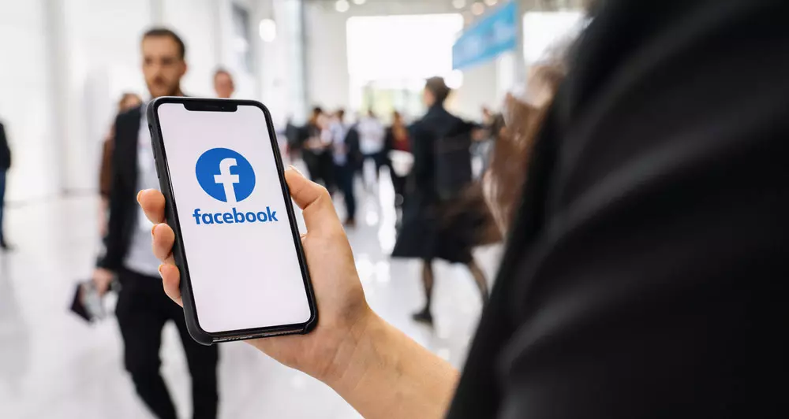
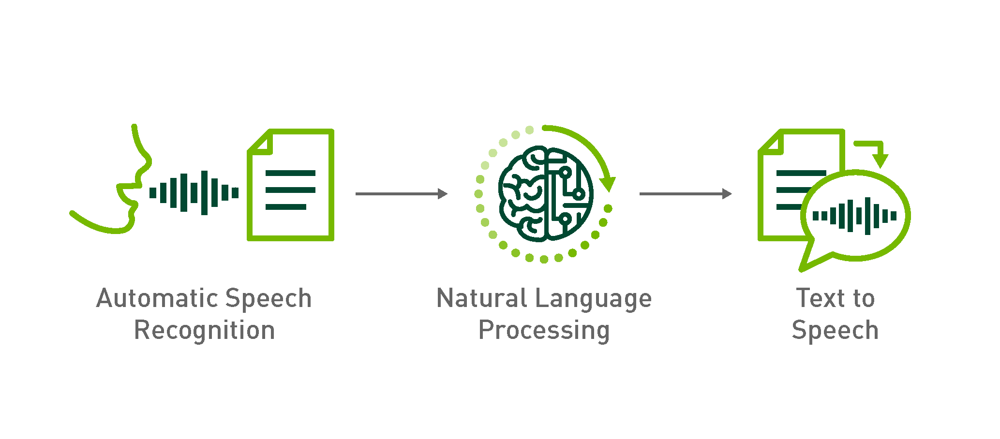
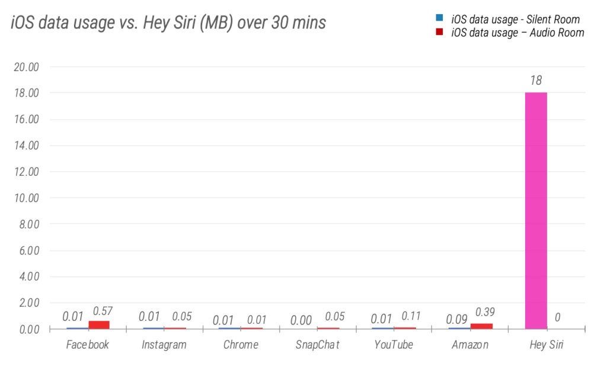

페이스북이 우리의 오프라인 대화를 도청한다???
게시: 2021-05-06T06:30:56+09:00
최근에 한다리 건너 아는 지인들의 이야기를 들었습니다. 친구 사이인 이들이 잡담을 했는데 그 가운데 필라테스 이야기를 꽤 많이 했더랍니다. 그런데 그 중 한명이 집에 돌아가서 보니, 여태까지 본인은 한번도 필라테스 관련하여 검색을 한 적이 없었는데도 그날 페이스북에 필라테스 관련 커머셜이 뜨더랍니다. 이것을 보고 '역시 페이스북이 우리 스마트폰을 통해서 우리의 대화를 엿듣고 있어'라고 친구들은 확신을 하게 되었답니다. 또 그에 대해서 페이스북이 시인을 했다는 기사를 봤다는 말도 나왔습니다.

정말 페이스북이 우리의 오프라인 대화를 엿듣고 있을까요? 그리고 페이스북이 그 사실을 시인한 적이 있었을까요? 당연히 그건 사실이 아닙니다. 아마 IT 계열에서 일하시는 분들은 그런 괴담이 얼마나 터무니 없는 것인지 잘 알고 계실 것입니다. 스마트폰에 설치된 앱이 임의로 마이크를 켜고 우리의 대화를 녹화하는 것은 충분히 가능한 일입니다. 보통 앱 설치할 때 마이크 및 메모리, 사진 폴더 접근 권한을 여러분 본인이 허락하는 경우가 많을 테니까요. 그러나 그렇게 녹음한 대화에서 뭔가 쓸 만한 정보를 캐내는 것은 완전히 다른 이야기입니다. 그게 불가능하다는 것은 아닙니다. 다만 페이스북이 그런 일을 벌이기에는 가성비가 나오지 않습니다. 만약 페이스북이 여러분이 의심하는 그런 일을 한다면 그건 당연히 돈을 벌기 위해서입니다. 그리고 그 돈은 맟춤형 커머셜을 여러분에게 띄움으로써 벌게 되는 것입니다. 그렇게 해서 페이스북이 버는 돈은 어느 정도 될까요? 대부분의 사람들은 그런 커머셜에 손을 대지 않을테니 그런 걸 감안하면 건당 몇십원 수준일 것입니다. 그런데 그렇게 여러분의 오프라인 대화를 엿듣고 거기에서 '이 사람이 필라테스에 관심이 있구나'라는 정보를 얻기 위해 페이스북이 써야 하는 비용은 얼마나 될까요? 거기에는 생각보다 많은 네트워크 사용량과 스토리지 용량, 그리고 컴퓨팅 파워가 들어갑니다. 일단 10분 간의 대화 녹음 파일에서 필라테스라는 정보를 추출하려면 그 음성 파일을 텍스트로 변환해야 합니다. 이건 요즘의 ML/DL (machine learning/deep learning, 기계학습 또는 인공지능) 기법을 이용해서 비교적 쉽다고 알려져 있습니다. 그러나 생각처럼 쉽지는 않습니다. TTS(Text-to-Speech)는 별로 어렵지 않습니다. 그러나 STT(Speech-to-Text)는 생각보다는 어렵습니다. 이건 사람마다 발음이나 억양, 사투리 등이 워낙 천차만별이기 때문에 그렇습니다. 여러분들은 '아이폰 시리나 구글 등에서 해보니 꽤 잘 되던데?'라고 생각하시겠지만 그건 여러분들이 스마트폰에 이야기할 때는 매우 또박또박 이야기하시기 때문입니다. 사람 간의 대화를, 그것도 무슨 주제로 이야기하는지 전혀 예측할 수 없는 대화를 text로 바꾸는 것은 여전히 완성도가 꽤 떨어집니다. 그래서 아직도 대부분의 콜센터에서는 사람을 고용하고 있는 것입니다. 많은 보험사에서는 여러분이 콜센터 상담원과 대화한 내용을 녹취하여 텍스트로 바꾸는 작업을 이미 하고 있습니다. 그러나 그 완성도는 아직 매우 낮습니다. 더군다나 그런 STT는 언어별로 다 따로 만들어야 합니다. 아마 영어를 인식하는 deep learning model은 이미 꽤 수준급으로 올라와 있을지도 모르게습니다만, 한국 시장의 크기를 생각할 때 페이스북이 한국어를 대상으로 한 모델을 따로 훈련시켜 만들었을 것 같지는 않습니다.

설령 우리가 아는 것보다 페이스북의 인공지능 실력이 진보되어 있어서 훨씬 완성도 높은 STT 모델을 가지고 있다고 하더라도, 여전히 우리의 오프라인 대화에서 돈이 될 만한 검색어를 찾아내는 것은 쉽지 않습니다. 먼저, 그 음성 파일을 페이스북 데이터센터로 전송하는 것부터가 문제입니다. 우리 대화를 녹음하면 대략 초당 3KB 정도의 파일이 나옵니다. 이걸 하루 종일 녹음하지 않고 무작위로 하루에 1시간씩만 녹음한다고 해도 10MB 정도가 됩니다. 한국 사람들 중에 페이스북 사용자 수를 낮게 잡아 1천만명이라고 해도, 하루에 100TB 씩의 스토리지가 필요한 데이터입니다. 거기서 끝나는 것이 아닙니다. 이 파일들로부터 뭔가 의미있는 키워드, 그러니까 필라테스나 전기차라든가 화장품 등의 단어를 찾아내어 이 사람이 어떤 것을 구매할 가능성이 있는지 찾아내려면 CPU가 필요합니다. 다음 날이면 또 그만큼의 녹음 파일이 쏟아져 들어올테니 하루 안에 저 100TB의 데이터를 처리하려면 상당한 양의 수퍼컴이 필요합니다. 이걸 휴대폰 자체의 CPU, 즉 AP(Application Processor)를 이용해서 처리한 뒤에 키워드만 뽑아내어 보내면 되지 않냐고 생각하실 수도 있습니다만, 여러분의 스마트폰 AP가 그렇게 혹사당하는데 여러분이 그걸 모르시기는 쉽지 않습니다. 무엇보다, 페이스북 앱이 여러분 스마트폰을 그렇게 은밀한 목적으로 혹사하고 여러분의 LTE 데이터를 써대는 것을 들키지 않는 것은 사실상 불가능합니다. 구글 안드로이드나 아이폰 iOS가 페이스북의 그런 활동을 모른척 해야하는데, 그러자면 서로 경쟁자인 구글, 삼성, 애플, 화웨이, 샤오미 등이 페이스북과 각각 협정을 맺고 서로 죽을 때까지 비밀을 지키자고 약속을 해야 하는데, 실제로 그럴 가능성이 얼마나 된다고 보십니까? 또 이런 것이 다 가능하다고 해도, 이거 불법입니다. 페이스북은 미국 회사이고, 미국에는 징벌적 배상제도가 있는 나라입니다. 기업체들에게 소송 걸어 합의금 뜯어내는 것을 좋아하는 미국 변호사들이 그걸 그냥 놔둘 리가 없고, 무엇보다 이미 억만장자인 주커버그 주사장이 고작 몇 푼 더 벌겠다고 이렇게 골치를 썩이고 정성을 기울여 자신을 감옥에 쳐넣을 수 있는 범죄행위를 주도할 가능성은 0에 수렴합니다. 더 결정적인 것이 있습니다. 페이스북은 여러분이 무엇에 관심이 있는지 알아내어 더 효과적인 맞춤형 커머셜을 할 수 있는 합법적 방법이 이미 많이 있습니다. 여러분은 끊임없이 스마트폰이나 PC에서 관심사를 찾아보고 검색하고 각종 사이트에 회원가입을 하고 있습니다. 그런 행위들을 통해, 굳이 비용이 많이 들고 형사 처벌 위험이 있는 불법 도청을 하지 않고도 페이스북은 여러분의 깊은 내면의 욕망을 얼마든지 알아낼 수 있습니다. 아마 여러분의 어머니나 애인보다 페이스북이 여러분에 대해 더 잘 알고 있을 것이고, 어쩌면 여러분보다 페이스북이 여러분 자신에 대해 더 잘 이해하고 있을 것입니다.
(가령 저는 최근 반농담 반진담으로 우리나라 해군의 경항모 도입 계획에 대해 페북에서 열렬히 환영하는 포스팅을 많이 올렸는데, 그랬더니 제 페북에 정말 '세계 유일의 해상용 전투헬기 AH-1Z Viper'의 홍보물이 뜨더군요.)
그럼에도 불구하고 많은 사람들은 페이스북이 정말 도청을 한다고 믿습니다. 심지어 2018년 미국 의회에서도 주커버그 주사장을 증인으로 소환하여 그런 질문을 명시적으로 한 적이 있었습니다. 대답은 당연히 No 였고요. 그래서 많은 이들이 정말 도청을 하지 않는지 기술적인 테스트를 많이 수행했습니다. 주로 특정 앱이 배터리와 데이터 전송량을 사용하는지 여부를 점검하는 것이었는데, 물론 결과는 페이스북 뿐만 아니라 다른 어떤 앱들도 도청 따위는 하지 않더라는 것이었습니다.

(이런 것들이 조사 결과 나왔습니다. 여러분의 아이폰 데이터 사용량을 좀먹는 1위는 바로 시리.)
그런데 그런 테스트 와중에, 페이스북 외에도 다른 많은 앱들이 엉뚱한 짓을 하는 것들이 발견되었습니다. 가령 어떤 앱들은 스마트폰 화면을 가끔씩 스크린샷으로 떠서 다른 모종의 업체에게 전송하고 있다는 것이 발견되었습니다. 총 17,000개의 안드로이드 앱을 점검해보니, 그 중에서 9,000개는 잠재적으로 스크린샷을 가져가도 된다는 사용자 허가를 요구했습니다. 그러니 딱히 불법도 아닌 셈이었지요. 오늘의 결론입니다. "음모론 따위는 믿지 마십시요. 그런 음모론보다 세상은 더 무섭습니다." ** 오늘 글은 대부분 그냥 제 생각을 주절주절 적은 것입니다만 아래 site의 글을 일부 참조했습니다.
newatlas.com/computers/facebook-not-secretly-listening-conversations/